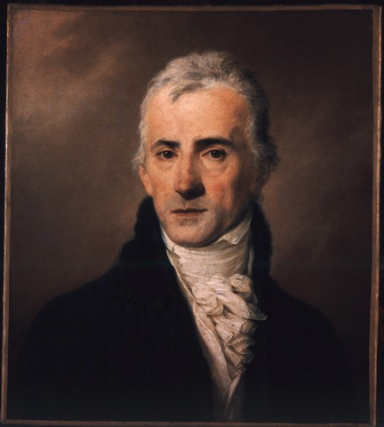
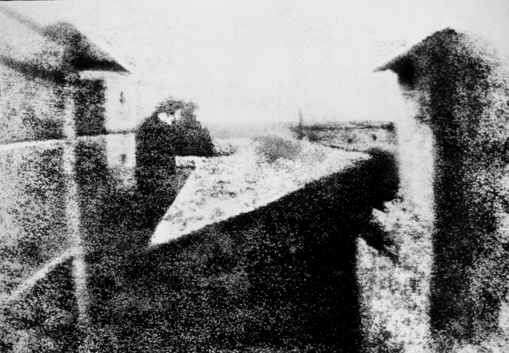

KazyFerenc_

Felfüggesztett fiók
Az alábbi személy Napóleont támogató és Francia ellenes kijelentesékért exkommunikálva és száműzve lett platformunkról a nyugalom és a béke megörzése érdekében. További információkat találhatsz erről az alábbi linken:
https://help.instagram.com
Üdv!
Na látom te is használod az új szavakat amiket feltaláltam
Kiválóak!
De tudod, hogy még mi az?
?
Napóleon új lyukkamerája! A képet amit csinált utólag befestette Ingres! Elképesztő realisztikus lett!
Amatőrök, a festő már nem is alkot, csak színez mint egy ovodás...
Hát ez elég nagy innováció pedig! Büszke lehetnél rá, mindig csak a saját munkásságodról beszélsz
Az én munkásságom hozzáad az emberek kreativitásához, ez az ősi masina csak elveszi
Legalább ebben még van valamennyi munka, nem csak egy gombot kell megnyomni
bár az soha nem fog megtörténni...
1826 július 17.
Beszarsz...

Ezt meg ki csinálta?
Valami Nicéphore Niépce nevű ürge
Persze, hogy francia...
Lusta népség...
Napóleon után igazán elszállt magától az az ország is
Kazinczy...
Ugye te nem vagy Napóleon szimpatizáns?
Ugye most nem fogsz jelenteni?
Sajnos benne van a szabályzatban...
Azt hittem bízhatok benned! Nagyot csalódtam ma